Table of Contents
1 1. Afsnit: Skoleskriften
Tegn og bitegn:
Sammensatte konsonanter:
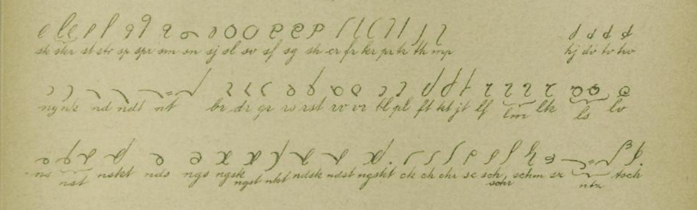
Konsonanternes længde eller højdeforhold angives i tredjedele; f, h, m er etmålstegn. Forstørrelsesformerne 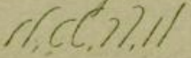 kunne med uforandret betydning forstørres med 1/3 højde, hvorved tydeligheden i visse tilfælde forøges. Princippet "så små tegn som mulig" kommer skrivehastigheden tilgode. Tegnenes højde overskrider ikke […] 6/3.
Vokalernes længdemål angives også i tredjedele, o er et etmålstegn, 2/3, 3/3,  5/3.
5/3.
Tal skrives som i almindelig skrift. Runde tal og visse talordsforbindelser har følgende sigler:
1.1 Om sammenskrivning og forkortning
"Dansk National-Stenografi" består af 2 hoveddele og inddeles i: 1) Det egentlige system, hvortil hører: alfabetet med hovedtegn og bitegn, dobbelttegn og konsonantsammensætninger; 2) Forkortelse: fastslåede og frie forkortninger, det vil sige sigler og monogrammer. Et sigel består af et eller flere bogstaver af det ord eller stavelse som det skal repræsentere:  = hver, = enhver, = hverken, = aldrig, = Kjøbenhavn, etc. Monogrammerer ejendommelige og vilkårlige tegn: = ig, 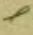 = ledes. Bøjningsendelser udskrives efter sigler og monogrammer på almindelig vis: = nation, = nationen, = enhver, = enhvers. Forstavelsen retter sig i højden efter stamordet, og man har lov til at dele et ord, når sammenskrivningen bliver ubekvem eller smagløs: 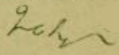 = sprogstudium, etc. Stamord og staveregel afgør hvilken sammensat konsonant, der skal benyttes når 2 sådanne støder sammen:
= hver, = enhver, = hverken, = aldrig, = Kjøbenhavn, etc. Monogrammerer ejendommelige og vilkårlige tegn: = ig, 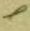 = ledes. Bøjningsendelser udskrives efter sigler og monogrammer på almindelig vis: = nation, = nationen, = enhver, = enhvers. Forstavelsen retter sig i højden efter stamordet, og man har lov til at dele et ord, når sammenskrivningen bliver ubekvem eller smagløs: 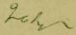 = sprogstudium, etc. Stamord og staveregel afgør hvilken sammensat konsonant, der skal benyttes når 2 sådanne støder sammen:  etc. Lydfordobling er i stenografien af underordnet betydning. De bogstaver, der ikke har dobbelttegn fordobles ved at sætte en lille vandret eller lodret streg over, under eller igennem tegnet: = ligge, = lønne, = finne, = feer, etc. Store begyndelsesbogstaver benyttes ikke. Vil man tilkendegive disse, sker dette ved at sætte forvandlingstegn = over eller igennem første bogstav af ordet: etc. Alle døde linier undgås. For konsonanter eller to vokaler som forekommer efter hinanden adskilles ved en ganske lille brydning af linien: ie, ea, pf; eller ved at skrive det ene over eller efter det andet: mf, pm, mb, etc.
Ligesom i almindelig skrift enkelte bogstaver kunne have 2 tegn, f.eks. r og ø , således også her: = a, = å, = d, = t, etc. Disse dobbeltformer bruges hver for sig efter smag og bekvemmelighed og bidrager til at øge tydeligheden og letskriveligheden. På grund af det nære lydslægtskab mellem e og æ kan man nøjes med en ringe forskel i formen. Almindeligt eller lang æ har samme form som e, men står nogle grader mere oprejst; kort d = er lidt kortere end e, men har samme heldning som dette. Man kan bruge begge efter eget skøn, og hvis man hovedsagelig vil tage hensyn til hurtigheden, så er kort æ i mange tilfælde lettest at benytte: foran og disses afledningsformer: = sække, = lægge, = rækker, = blæst, = flæsk; men = ære, = kære,
etc. Lydfordobling er i stenografien af underordnet betydning. De bogstaver, der ikke har dobbelttegn fordobles ved at sætte en lille vandret eller lodret streg over, under eller igennem tegnet: = ligge, = lønne, = finne, = feer, etc. Store begyndelsesbogstaver benyttes ikke. Vil man tilkendegive disse, sker dette ved at sætte forvandlingstegn = over eller igennem første bogstav af ordet: etc. Alle døde linier undgås. For konsonanter eller to vokaler som forekommer efter hinanden adskilles ved en ganske lille brydning af linien: ie, ea, pf; eller ved at skrive det ene over eller efter det andet: mf, pm, mb, etc.
Ligesom i almindelig skrift enkelte bogstaver kunne have 2 tegn, f.eks. r og ø , således også her: = a, = å, = d, = t, etc. Disse dobbeltformer bruges hver for sig efter smag og bekvemmelighed og bidrager til at øge tydeligheden og letskriveligheden. På grund af det nære lydslægtskab mellem e og æ kan man nøjes med en ringe forskel i formen. Almindeligt eller lang æ har samme form som e, men står nogle grader mere oprejst; kort d = er lidt kortere end e, men har samme heldning som dette. Man kan bruge begge efter eget skøn, og hvis man hovedsagelig vil tage hensyn til hurtigheden, så er kort æ i mange tilfælde lettest at benytte: foran og disses afledningsformer: = sække, = lægge, = rækker, = blæst, = flæsk; men = ære, = kære,  = lære, = træt,
= lære, = træt,  = teatret, = mæhæ, etc.
Bitegn for d og t skrives opad, men i samme retning som hovedtegnene. I begyndelsen af ord skrives d og t nedad. Når der efter d og t + vokal følger et nyt d eller t skrives det første d eller t nedad, undtagen i endelsen: = tet; se næste side. Efter e, æ, i skrives d og t opad i samme retning som disse, men uden brydning af linien: = kt, , kæt, ket, kit.
= teatret, = mæhæ, etc.
Bitegn for d og t skrives opad, men i samme retning som hovedtegnene. I begyndelsen af ord skrives d og t nedad. Når der efter d og t + vokal følger et nyt d eller t skrives det første d eller t nedad, undtagen i endelsen: = tet; se næste side. Efter e, æ, i skrives d og t opad i samme retning som disse, men uden brydning af linien: = kt, , kæt, ket, kit.
I analogi med hj = 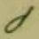 og sj = 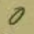 formes: bj, pj, dj, tj, gj, kj, stj, skj, men med snæver sløjfe. Efter j-forbindelsen bruges hult a: = Hjalmar, = Bjarke, = pjank, = Fjalfe, 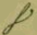 = stjal,  = skjald,
= skjald,  = sjat, etc. Hvis der efter + a følger et af de i efterfølgende punkt 1 nævnte bogstaver med hel eller halv bue bruges rundt a: = sjap, = sjakal, = nationale, etc.
= sjat, etc. Hvis der efter + a følger et af de i efterfølgende punkt 1 nævnte bogstaver med hel eller halv bue bruges rundt a: = sjap, = sjakal, = nationale, etc.
I en opadgående bølgelinie indeholdes de 2 slags a: = a a. Rundt a benyttes: 1) I begyndelsen af ord foran bogstaver med hel eller halv bue foroven: 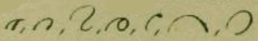 etc. 2) Indeni og slutningen af ord efter l højre om, samt 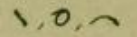 og disses afledningsformer, når der efter disse + a følger et af de i punkt 1 nævnte tegn eller bogstaver: = rang, = sal, = nag, = lampe, etc. Når l ikke er forbunden med stavformig og nedadskrevet konsonant er det heldigst at bruge l højre om for an o, u, å = . L venstre om bruges særlig foran tegn uden hel bue foroven: etc. Som tilsætning til = ig, = ighed : = lig, = lighed, samt i forbindelse med stavf. og nedadekt. konsonant: = bl, = pl, etc. I sidste tilfælde hæves v, u, å = lidt op idet man førend man går till højre fører pennen lidt opad i nedstregen: = blå, = plus, = blomst, etc. Samme hævning af ø, u, å = finder sted også uden l: = tro, = stue, = strå, etc.